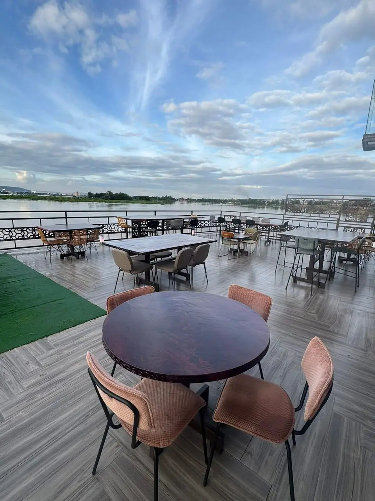

Assiettes copieuses
On ne lésine pas sur la portion : assaisonnement franc, viande et poisson servis bien chauds.
Un instant…


Bacodjicoroni ACI · bord du fleuve
Grillades, poisson et cocktails — ouvert tous les jours de 16h à 3h.
Tables sur place · groupes · réserver par téléphone
Notre adresse à Bamako
Familles, collègues, anniversaires : on vous installe, on sert chaud, et la terrasse reste le meilleur plan en soirée.

Au bord du fleuve
Lumière sur l’eau, tables qui se remplissent, musique douce — c’est le moment où l’on s’attarde.
Souvent demandés
Ce qu’on soigne
On ne lésine pas sur la portion : assaisonnement franc, viande et poisson servis bien chauds.
Musique, lumière douce, tables qui parlent fort — et la brise du Niger en terrasse.
Un coup de fil, un message WhatsApp, ou vous passez : pas de formulaire bizarre, on répond.
Bar américain
Côté fleuve
Avis clients